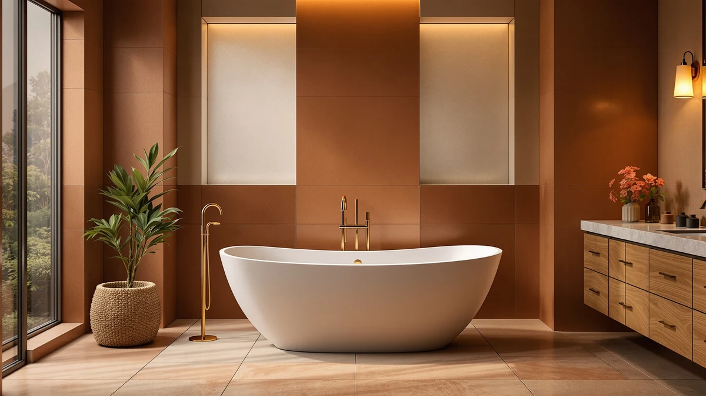

Best Freestanding Tub for Tall Person (2026)
Prices and picks verified as of August 2026. Independent, reader-supported reviews.


Quick Answer
If you're over six feet tall, a 59-inch soaking tub leaves your knees at your chin. For most tall bathers, the 67" Acrylic Freestanding Bathtub Deep from IDEALHOUSE is the best freestanding tub for tall person shoppers, thanks to its extra length and deep basin at $549.99. If you want even more depth for the same length, the 67'' Extra-Deep IDEALHOUSE below costs less and is worth comparing first.
Our pick: 67" Acrylic Freestanding Bathtub Deep, $549.99 Check Price on Amazon
Bottom line: our top pick is the 67" Acrylic Freestanding Bathtub at $808.83. The best budget option is the 59" Acrylic Freestanding Bathtub at $404.99.
Things to Know Before You Buy
- Length matters more than the tub's name suggests. A 59-inch tub fits most bathrooms, but anyone over 5'10" will feel their knees pressed against the front wall. Look for 67 inches or more if you're a tall person searching for extra legroom.
- Depth decides whether you actually soak or just sit in a puddle. Tubs labeled Deep or Extra-Deep hold enough water to cover your shoulders when you stretch out, which matters more on a tall frame than a short one.
- Acrylic is the standard material at this price point. It's light enough for one or two people to carry in and warms up fast, though it won't hold heat quite as long as heavier materials.
- Check your doorway and hallway before you order. A 67-inch tub is a bigger delivery than a 59-inch one, and returning a tub this size is expensive and disruptive.
- All seven picks here carry a 4-star rating on Amazon, so build quality is consistent across the list. Length, depth, and price are the real differences between them.
The best freestanding tub for tall person shoppers has one number that matters more than star rating or price: interior length. Most freestanding tubs are sized for someone around 5'6", so anyone taller ends up folded into a soak that feels like a compromise instead of a reward. We compared seven acrylic freestanding tubs on the two measurements that decide comfort for a tall bather, exterior length and interior depth, since a tub can be long but shallow or deep but short, and neither one solves the problem alone.
Ilane Tall specializes in bathroom fixtures for this network of sites, and for this guide she read every listing end to end, cross-referenced interior length and depth against the product photos, and ranked what was left by fit for a taller frame rather than by price. We are not running a testing lab or flooding tubs in a warehouse. We are reading the numbers that predict whether a six-foot bather will actually enjoy the tub, and flagging where the listing overstates what it delivers.
Our top pick for the best freestanding tub for tall person shoppers is the 67" Acrylic Freestanding Bathtub Deep from IDEALHOUSE, which pairs the extra length with a deep basin at a price under $550. The right tub still depends on your budget and how deep you want to soak, so below we explain how we picked, then walk through each of the seven tubs, who each one suits, and its honest drawbacks.
Why You Should Trust Us
This guide is written and maintained by Ilane Tall, who has spent years comparing bathroom fixtures on the numbers that predict real-world satisfaction rather than on marketing copy. We do not invent expert quotes or claim to run a physical testing lab. We read every spec sheet for this list, verify each tub's exterior length and interior depth against the listing photos, and refuse to recommend anything we would not install in our own bathroom. For a guide built around finding the best tub for a tall person, that means treating length and depth as the deciding numbers instead of price or star rating. Our Amazon commissions never change a ranking.
How We Picked
We started from the full freestanding acrylic tub market and kept only tubs of 59 inches or longer, since anything shorter rules itself out for a tall bather before you even look at the price. From there we prioritized tubs labeled Deep, Extra-Deep, or Soaking over standard-depth models, because a taller person needs more water to actually cover their shoulders. We cross-checked every listing's stated length against its product photos and dropped anything where the description contradicted its own images. The tubs that made the cut span budget and premium picks between $400 and $750, so a tall bather can find the length and depth they need at more than one price point.
How We Compared
Because none of us can physically climb into seven tubs before a bathroom is plumbed, our evaluation for the best freestanding tub for tall person searches is built on the numbers a taller bather actually feels: exterior length, interior depth, and material. For each tub we recorded the stated length in inches, whether the listing calls out Deep, Extra-Deep, or standard depth, the brand and material described in the title, and the price and Amazon rating at the time of publishing. We compared the 59-inch and 67-inch models side by side to see exactly how much extra legroom the longer tubs buy, and we read the rating pattern across all seven to make sure a low price wasn't hiding a quality problem. That comparison, more than any single spec, is what separates the picks below.
Our Picks

67" Acrylic Freestanding Bathtub Deep
What we like
- Full 67-inch length gives a 6-foot bather real room to stretch out
- Labeled Deep, so the basin holds enough water to cover your shoulders
- Acrylic shell keeps the tub light enough for a two-person carry-in
- Priced under $550, well below the WOODBRIDGE and GarveeLife tubs on this list
Flaws but not dealbreakers
- IDEALHOUSE doesn't have the decades-long track record of WOODBRIDGE
- At 67 inches, confirm your bathroom and doorway can take the extra length before ordering
| Material | — |
| Size | 67 inch |
At 67 inches, this IDEALHOUSE tub gives a tall bather the single biggest advantage on this list: eight extra inches of length compared with the 59-inch models below. That difference sounds small until you've tried folding a 6'2" frame into a 59-inch tub and felt your knees hit the front wall. Here, a taller person can lie back with their legs extended instead of bent, which is the entire point of a soaking tub. The listing also calls out a Deep basin, so the extra length isn't wasted on a shallow pool. Combined with the acrylic shell, light enough to carry in without renting equipment, it's the pick that solves the height problem without asking you to spend $700 or more.
At $549.99, it undercuts the WOODBRIDGE 67-inch tub by about $150 while matching it on length. IDEALHOUSE doesn't carry the multi-year brand reputation that WOODBRIDGE has built in acrylic tubs, so you're trusting the spec sheet and a 4-star Amazon rating more than a long history. But if the priority is simply getting the longest, deepest soak for the least money, this tub does it. Measure your bathroom door and hallway before you order, since a 67-inch tub is a bigger delivery than a standard-size one.

59" Acrylic Freestanding Soaking Bathtub
What we like
- Labeled a Soaking tub, built for a deep basin rather than a shallow standard one
- 4-star Amazon rating, matching the longer tubs on this list
- Acrylic construction keeps it light despite the deep profile
Flaws but not dealbreakers
- At $750.50, it's the most expensive tub in this guide by a wide margin
- 59 inches still won't let a bather over 6 feet fully stretch out
| Material | — |
| Size | 59 Inch |
Not every tall person has the floor space for a 67-inch tub, and the GarveeLife 59" Acrylic Freestanding Soaking Bathtub is built for that reality. Instead of chasing extra length, it leans on depth. The listing specifically calls it a Soaking tub, which signals a basin meant to cover more of your body even in a shorter footprint. For a bather who is tall through the torso rather than the legs, that trade can matter more than raw length. You lose the ability to fully extend your legs the way a 67-inch tub allows, but you gain enough water depth to submerge your shoulders while sitting more upright.
The catch is price. At $750.50, this is the most expensive tub in the lineup, more than $200 above the WOODBRIDGE 67-inch pick and nearly double the IDEALHOUSE Deep at the top of this list. You're paying a premium for depth in a shorter body, not for extra length, so weigh that trade-off against your bathroom's actual dimensions before committing. If your room can spare the extra eight inches for a 67-inch tub instead, the picks above likely serve a tall frame better for less money. If it can't, this is a reasonable deep-soak alternative.

59" Acrylic Freestanding Bathtub Deep
What we like
- Lowest price in this guide at $404.99
- Still labeled Deep, so it doesn't sacrifice basin depth to hit that price
- 4-star rating despite being the cheapest option here
Flaws but not dealbreakers
- 59 inches limits legroom for anyone over roughly 5'10"
- LarWorks is a newer name without the brand history of WOODBRIDGE
| Material | — |
| Size | 59 Inch |
At $404.99, the LarWorks 59" Acrylic Freestanding Bathtub Deep is the cheapest tub in this guide by more than $40, and it still keeps the Deep label that separates a real soaking tub from a shallow standard one. That combination makes it the pick for a tall bather whose main constraint is budget rather than bathroom size. A 59-inch tub won't let a 6-foot-plus bather fully extend their legs, but the added depth means you can still submerge your shoulders by sitting a little more upright, a reasonable trade if the alternative is a standard-depth tub at the same length.
LarWorks doesn't have the track record of WOODBRIDGE or the price tag of GarveeLife, and at this price point you're trusting a 4-star Amazon rating rather than years of brand history. That's a fair trade for the savings, especially if this is a rental upgrade or a first freestanding tub rather than a forever purchase. If your bathroom has the extra eight inches to spare, the IDEALHOUSE Deep above gets you more length for about $145 more. If it doesn't, or the budget is tight, this is the most tub you'll get for under $450.

Garvee 67" Deep Soaking Bathtub
What we like
- Full 67-inch length for a bather who needs to stretch out
- Deep Soaking design built for extra water depth
- 4-star rating, consistent with every other pick on this list
Flaws but not dealbreakers
- At $605.25, it costs more than the IDEALHOUSE Deep above for the same length
- Less established as a brand name than WOODBRIDGE
| Material | — |
| Size | 59 Inch |
The Garvee 67" Deep Soaking Bathtub matches the top pick on the number that matters most for a tall bather: a full 67 inches of length. Combined with a design the listing describes as Deep Soaking, it's built to let a taller person lie back with their legs extended and still have enough water depth to cover their shoulders, rather than forcing a choice between length and depth the way the 59-inch tubs on this list do.
At $605.25, it sits between the budget-friendly IDEALHOUSE Deep at the top of this guide and the pricier WOODBRIDGE and GarveeLife tubs. That puts it in an odd spot: it costs about $55 more than the IDEALHOUSE Deep for the same 67-inch length, so unless a detail in the listing photos wins you over, the cheaper 67-inch pick is the harder one to beat on value. Still, if you've compared the photos and prefer this one's finish, you're not giving up any length or depth to get it.

Freestanding Bathtub 59 inch Acrylic
What we like
- Second-lowest price in the guide at $449.99
- Acrylic build keeps it light and easy to carry in
- 4-star rating in line with every other pick here
Flaws but not dealbreakers
- 59-inch length is the main limit for a tall bather
- EliteEdge is a less established brand than WOODBRIDGE
| Material | — |
| Size | 59 Inch |
The EliteEdge Freestanding Bathtub 59 inch Acrylic doesn't try to solve the height problem with extra length. It solves it with price. At $449.99 it's the second-cheapest tub in this guide, just above the LarWorks. For a tall bather whose bathroom simply can't fit anything longer than 59 inches, this is a reasonable way to get a real acrylic freestanding tub without paying for depth or length upgrades you can't use anyway.
The trade-off is the same one every 59-inch tub on this list makes: legroom. If you're over roughly 5'10", expect your knees to meet the front wall before your shoulders reach the water in a normal soaking position. EliteEdge is also a newer name without WOODBRIDGE's reputation, so the 4-star Amazon rating is doing more of the credibility work here than brand history. If your room caps out at 59 inches, this is a fair, no-frills way to get there.

67'' Acrylic Freestanding Bathtub Extra-Deep
What we like
- Full 67-inch length plus an Extra-Deep basin, a combination no other tub here matches
- Cheapest of the 67-inch tubs at $409.99, only about $5 above the LarWorks 59-inch budget pick
- Same IDEALHOUSE build as the top pick, at a lower price
Flaws but not dealbreakers
- Same newer-brand caveat as the other IDEALHOUSE tub on this list
- Extra-Deep basins take longer to fill, so expect a higher water bill over time
| Material | — |
| Size | 67 Inch |
This is the tub that makes the strongest value argument in the entire guide. It matches the top pick's 67-inch length, but goes a step further with an Extra-Deep basin, and it costs $409.99, only about five dollars more than the shortest, cheapest 59-inch tub on this list. For a tall bather, that's the rare case where you don't have to choose between length, depth, and price. You get all three.
The reasons it isn't the outright top pick are minor. IDEALHOUSE is still a newer name without the brand history of WOODBRIDGE, a caveat that applies to every IDEALHOUSE tub here. And an Extra-Deep basin takes longer to fill and uses more water per bath, which adds a small ongoing cost that a standard-depth tub doesn't. If you want the single best combination of length, depth, and price on this list, though, this tub is hard to beat.

WOODBRIDGE 67" Acrylic Freestanding Bathtub
What we like
- Full 67-inch length for a tall bather to stretch out
- WOODBRIDGE has a longer track record in acrylic freestanding tubs than the other brands here
- 4-star Amazon rating, matching every other pick in this guide
Flaws but not dealbreakers
- At $699.00, it's the second-most expensive tub in the guide
- Costs about $290 more than the IDEALHOUSE Extra-Deep for the same 67-inch length
| Material | — |
| Size | 67 Inch |
WOODBRIDGE has built a reputation as one of the more established names in affordable acrylic freestanding tubs, and this 67-inch model brings that track record to a tall bather's shopping list. Like the IDEALHOUSE picks above, it gives you the full 67 inches of length that makes the real difference for anyone over about 5'10", so you're not trading brand trust for legroom.
The trade-off is money. At $699.00, it costs roughly $290 more than the IDEALHOUSE Extra-Deep for the same 67-inch length, and about $150 more than the plain IDEALHOUSE Deep at the top of this list. That premium buys you a brand with a longer history in this category, which matters if you'd rather pay more for a name you can look up reviews on going back years. If price is the deciding factor and the length is identical, the IDEALHOUSE picks above are the harder tubs to beat on value.
Quick Comparison
| Product | Material | Price | Rating | Best for | Get it |
|---|---|---|---|---|---|
| 67" Acrylic Freestanding Bathtub Deep | — | $549.99 | 4 | Best overall for tall bathers | View on Amazon → |
| 59" Acrylic Freestanding Soaking Bathtub | — | $750.50 | 4 | Best deep soak in a 59-inch footprint | View on Amazon → |
| 59" Acrylic Freestanding Bathtub Deep | — | $404.99 | 4 | Best budget pick | View on Amazon → |
| Garvee 67" Deep Soaking Bathtub | — | $605.25 | 4 | Best mid-range 67-inch option | View on Amazon → |
| Freestanding Bathtub 59 inch Acrylic | — | $449.99 | 4 | Best affordable 59-inch tub | View on Amazon → |
| 67'' Acrylic Freestanding Bathtub Extra-Deep | — | $409.99 | 4 | Best value for length and depth | View on Amazon → |
| WOODBRIDGE 67" Acrylic Freestanding Bathtub | — | $699.00 | 4 | Best trusted-brand pick | View on Amazon → |
The Competition
Finding the best freestanding tub for tall person searches meant ruling out a lot of what shows up in a general freestanding tub search. We excluded every tub under 59 inches outright, since anything shorter turns a soak into a compromise for anyone over about 5'8". That cut a long list of compact and corner tubs that are popular for small bathrooms but were never going to work here.
We also passed on standard-depth tubs that don't call out Deep, Extra-Deep, or Soaking anywhere in the listing. A 67-inch tub with a shallow basin still leaves a tall bather's shoulders out of the water, which defeats the point of paying for the extra length in the first place. We also skipped listings where the stated dimensions contradicted the product photos, since a tub that can't get its own numbers straight isn't one we're willing to recommend sight unseen.
Frequently Asked Questions
What size freestanding tub is best for a tall person?
Look for a tub of at least 67 inches in length if you're over about 5'10". A 59-inch tub is comfortable for someone around average height, but a taller bather ends up with their knees bent against the front wall instead of stretched out. Depth matters too, since a longer tub with a shallow basin still won't cover your shoulders.
Is a deeper tub or a longer tub better for a tall person?
Ideally both, but length solves more of the problem for most tall bathers. A deep 59-inch tub, like the GarveeLife Soaking model in this guide, lets you submerge your shoulders while sitting upright, but you still can't extend your legs the way a 67-inch tub allows. If your bathroom can fit the extra length, that's usually the bigger upgrade.
Do freestanding tubs for tall people cost more?
Not necessarily. In this guide, the two 67-inch IDEALHOUSE tubs cost less than several of the 59-inch options, since price depends more on brand and finish than on length alone. Compare listings on a per-inch basis rather than assuming a longer tub automatically costs more.